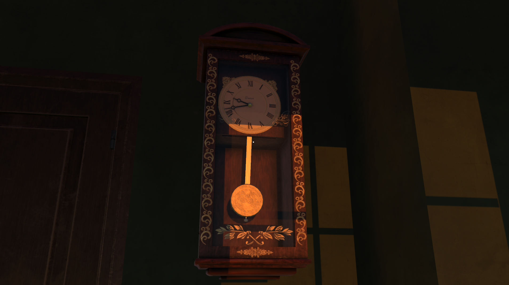
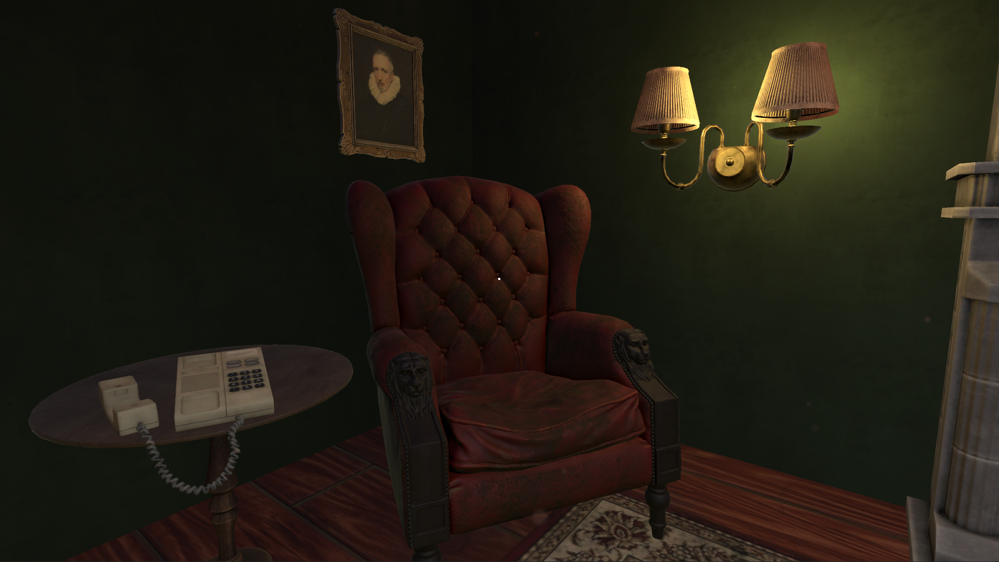

The Way Out
Unity Developer
The Way Out is a short first-person game prototype where you must search your environment to find the escape from an ominous room.
I worked solo on this project to design and script a first-person interaction system as well as various other in-game mechanics.
The goal of this project was to demonstrate my ability to choose publicly available game assets and create a polished, realistic gamefeel similar to popular titles in the indie horror and walking simulator genres.
Play the demo below.

